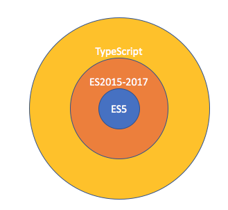
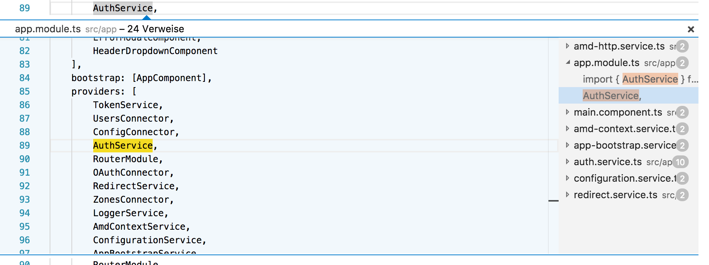
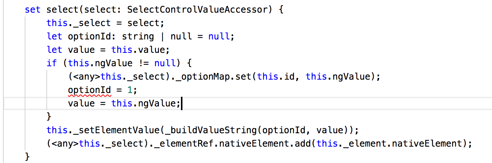
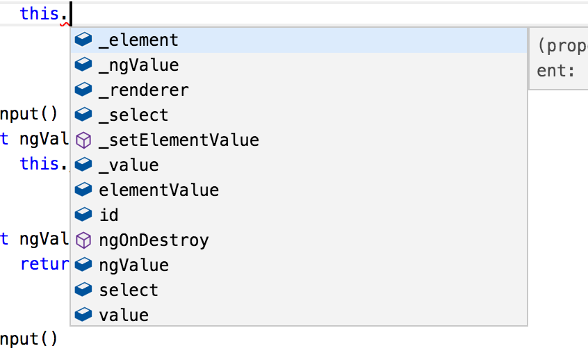

Introduction to TypeScript
Thomas Mair
What is TypeScript?
Typed superset of JavaScript

Optionally typed
Transpiles/Compiles to JavaScript
Developed by Microsoft by Anders Hejlsberg
Von DBegley -
http://www.flickr.com/photos/begley/2985424826/in/set-72157608507966144
,
CC BY 2.0
,
Link
By
Microsoft Corporation
- Meisner, Jeffrey (
August 23, 2012
).
Microsoft Unveils a New Look
(in English)
.
The Official Microsoft Blog
.
Microsoft
. Retrieved on
January 14, 2015
. (
Direct link
)., Public Domain,
Link
Refactoring
Find usages/definitions

Catch errors at compile time

Code completion

Thank You
Questions ???